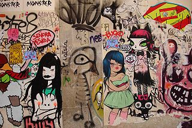
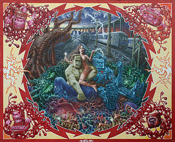
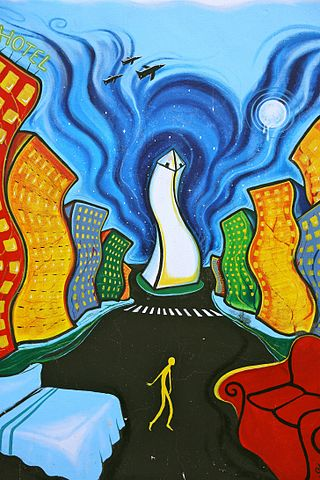
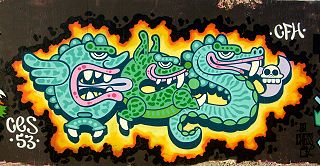

DECORATIVE AND HIGH ART
In the early 1980s, the first art galleries to show graffiti artists to the public were Fashion Moda in the Bronx and Now Gallery in the East Village, Manhattan.
A 2006 exhibition at the Brooklyn Museum displayed graffiti as an art form that began in New York's outer boroughs and reached great heights in the early 1980s with the work of Crash, Lee, Daze, Keith Haring, and Jean-Michel Basquiat. It displayed 22 works by New York graffiti artists, including Crash, Daze, and Lady Pink. In an article about the exhibition in the magazine Time Out, curator Charlotta Kotik said that she hoped the exhibition would cause viewers to rethink their assumptions about graffiti. Terrance Lindall, an artist and executive director of the Williamsburg Art and Historic Center, said regarding graffiti and the exhibition:
"Graffiti is revolutionary, in my opinion", he says, "and any revolution might be considered a crime. People who are oppressed or suppressed need an outlet, so they write on walls—it's free."
From the 1970s onwards, Burhan Dogancay photographed urban walls all over the world; these he then archived for use as sources of inspiration for his painterly works. The project today known as "Walls of the World" grew beyond even his own expectations and comprises about 30’000 individual images. It spans a period of 40 years across five continents and 114 countries. In 1982, photographs from this project comprised a one-man exhibition titled "Les murs murmurent, ils crient, ils chantent..." (The walls whisper, shout and sing...) at the Centre Georges Pompidou in Paris.
In Australia, art historians have judged some local graffiti of sufficient creative merit to rank them firmly within the arts. Oxford University Press's art history text Australian Painting 1788–2000 concludes with a long discussion of graffiti's key place within contemporary visual culture, including the work of several Australian practitioners.
Between March and April 2009, 150 artists exhibited 300 pieces of graffiti at the Grand Palais in Paris — a clear acceptance of the art form into the French art world.
Many graffiti artists have used their design talents in other artistic endeavors. In 2009 graffiti artist "Scape" published GRAFF; the Art & Technique of Graffiti, the world's first book dedicated to displaying the full techniques of creating graffiti art. Other books that focus on graffiti include Faith of Graffiti by Norman Mailer, Trespass by Taschen press, and the comic book by Elite Gudz, Concrete Immortalz, which has a graffiti artist as its main character.
Figurines by KAWS, featuring icons of pop culture, often with crossed-out eyes, run in limited editions and sell for thousands of dollars. World-renowned street artist Banksy directed a film in 2010, Exit Through the Gift Shop, which explored street art and commercialism.